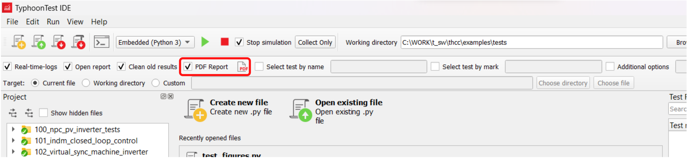
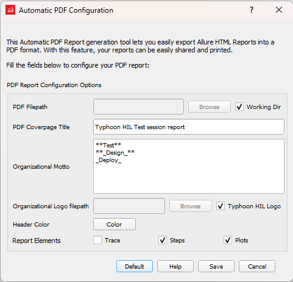
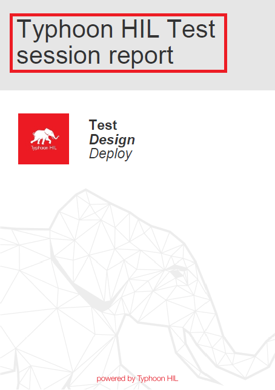
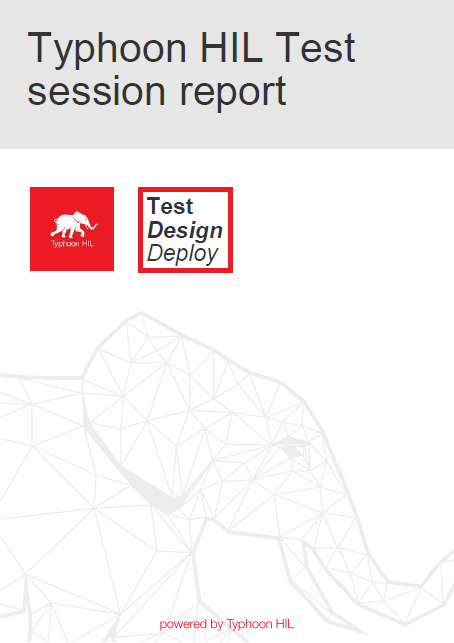
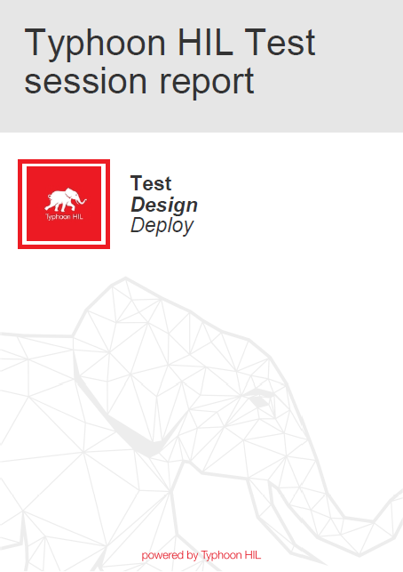
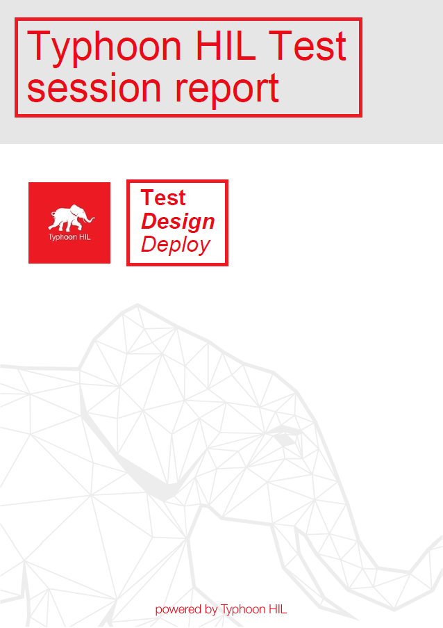
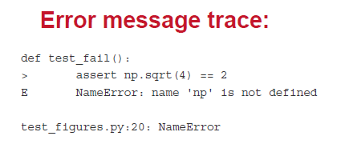
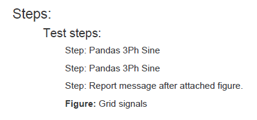
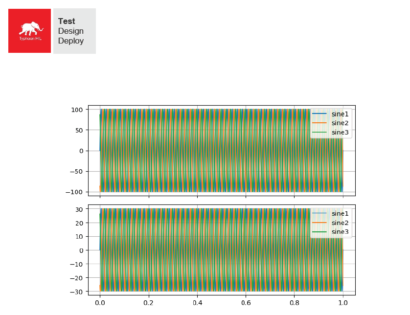

TyphoonTest IDE Automatic PDF Report
Description of how to configure reports using the Automatic PDF Reports tool in TyphoonTest IDE.
The Automatic PDF report is a feature that allows you to print your Allure report as a PDF file, with the possibility to customize details. Figure 1 shows where the functionality is placed in the TyphoonTest IDE interface.

The PDF Report checkbox enables/disables both the dialog for PDF configuration and PDF report generation at the end of your test run. The PDF report button opens the dialog shown in Figure 2 to setup the PDF configurations.

The dialog contains eight customized parameters, shown in Table 1, and four options to Save, Cancel, and return to the Default parameters.
| Parameter | Description | Location of affected parameter on report (shown in the red box) |
|---|---|---|
| PDF Filepath | Defines the filename and where the PDF file will be saved. By
default, selecting the Working Dir checkbox will
save the PDF in the Working Directory defined in TyphoonTest IDE.
Note: If a test file is already present in the defined PDF Filepath, it will be automatically
overwritten. To avoid overwriting previous tests, change the
name or filepath prior to each new session.
Note: If an existing test file at the defined
PDF Filepath is already open in another application or reader,
TyphoonTest will not have permission to overwrite
the file and PDF generation will fail. |
|
| PDF Coverpage Title | Set the title on the header of the report. |  |
| Organizational Motto | The slogan is placed next to the logo on the report header. You can type words between double-asterisk (**Text**) to style the text bold and single underscores (_Text_) to style the text italic. |  |
| Organizational Logo filepath | Location for the logo on the report header. If the Typhoon HIL Logo checkbox is selected the default Typhoon logo will be printed in the report. |  |
| Header Color | Color used for the Title and Slogan texts. In the Color Dialog open by the Color button, official Typhoon HIL red (#e90c17) and grey (#333333) are presented for quick use. |  |
| Report Elements (Trace or Traceback) | Selecting Traceback allows error messages to be shown in the PDF should a test fail to complete. |  |
| Report Elements (Steps) | Steps are a subsection that can be defined in the test and displayed in the Allure report. Selecting this option will allow each detail of the test procedure to be added to the PDF. |  |
| Report Elements (Plots) | With this option, all plots defined in the Allure report will be added to the PDF. |  |